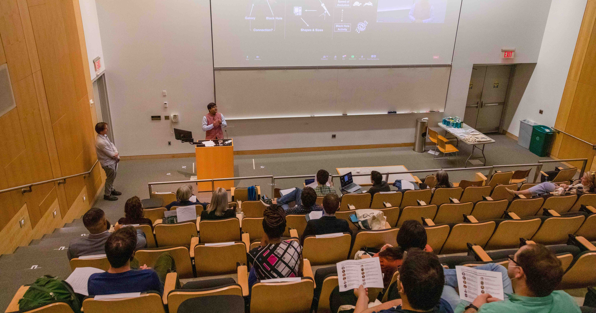

Image Credit: Yale GSAS & Harold Shapiro
During my entire childhood and early adult years spent in India, some of
the most impactful decisions in my life were influenced by excellent teachers
and mentors. My interest in computation techniques & astronomy were
both driven by individuals and teachers, who acted as role-models for me.
Because of this lived experience, I have always believed very strongly
that teachers and mentors can have a tremendous amount of real impact on
the lives of their students. Driven by this firm conviction, I have
passionately pursued every mentoring and teaching opportunity that I have
got. You can use the buttons below to explore some of them!
Yale PHYS 378: Co. Lead Instructor
I will be teaching 50% of a brand new undergraduate course at Yale titled ``Phys 378: Introduction to
Scientific Computing & Data Science" with
Prof. Daisuke Nagai. The goal of the course is to introduce Yale Physics & Astronomy
undergraduates to modern scientific computing methods. I will be focusing primarily on the second half
of the course which deals with supervized and unsupervized machine learning techniques.
The Yale Poorvu Center for Teaching &
Learning runs the competitive Yale Associates in Teaching Program which allows advanced Ph.D. students to expand
their range of teaching experiences and responsibilities by co-designing and co-teaching a course
with a Yale faculty member
Given how rapidly the scientific computing landscape, especially machine learning, has changed
in the last few years, Daisuke and I proposed this new course as a major redesign of
a previously taught course, that focused mostly on more traditional forms of scientific computing. The course
aims to empower undergraduate students with a wide variety of analysis methods, tools, and techniques critical
in harnessing the next generation of large, complex, and interdisciplinary datasets.
Given that this course primarily deals with programming, and guided by the latest research on pedagogical practices,
PHYS 378 will be delivered as a hands-on computing lab course, which meets weekly for a typical 3-hour session.
Students will be expected to to watch one/two 10-minute
videos at the beginning of every week, which will introduce to the mathematical/statistical aspects needed for every class.
Then each class session will constitute of :- a) 40% planned class-room instruction (slides, chalkboard, and live-coding); b) 60% of
coding-time when students will be live-coding in small groups and instructors, teaching fellows will be walking around to
assist them.
There will also be a series of three Zoom seminars led by academic researchers and people from the
industry with practical machine learning experience held towards the latter half of the course. In addition
to the lab exercises, these are supposed to give the students more examples of real-life applications of
what they are learning and give them some ideas and inspiration for their final project.
Beginning Spring 2023, selected course materials from PHYS378 will be publicly available here!
Teaching Fellowhips & Assistantships
Combining my time at the University of Groningen and Yale, I have instructed
undergraduates in a wide variety of settings and for courses at different
levels for a total of ten semesters. Most of the courses I taught at Yale
involved leading discussion-section and problem solving sessions. I have also
guest-lectured for a few courses
(mostly on data-science & machine learning) at Yale.
For Advanced
Mechanics at the University of Groningen, I had the role of leading discussion-section
and problem solving sessions. For the rest of the courses, I was a lab-instructor in-charge
of a specific experiment every year. Under a special arrangement of an expanded appointment,
I also redesigning an old interferometer experiment and designed a new experiment on determining
the decay time of muons.
Yale University
6 semesters as Teaching Fellow
- ASTR 356 01 / ASTR 556 01 / PHYS 356 | Astrostatistics & Data Mining | Spring 2020
- ASTR S135E | Archaeoastronomy | Summer 2019 & Summer 2018
- ASTR 130 | Origins & Search For Life In the Universe | Fall 2017
- ASTR 110 | Planets and Stars | Spring 2018 & Fall 2018
University of Groningen
1 semesters as Teaching Fellow | 3 semesters as lab instructor
- Waves & Optics | Fall 2015
- Physics Lab 3 | Spring 2016
- Physics Lab 4 | Fall 2016
- Advanced Mechanics | Spring 2017
Meyerhoff & Granville Scholars Programs
During my time at Yale, I was involved in two specific summer research programs, which
aimed at training a more diverse and socially aware next generation of scientists.
Meyerhoff Scholars' Program: I have mentored and supervised three highly talented
undergraduate students from UMBC in the Urry Lab during the summers since 2018 as
part of the Meyerhoff Scholars Program. Responsibilities included an initial one-week
period of teaching followed by twice-a-week personal meetings to support them and oversee
their progress. The Meyerhoff Scholars Program
is at the forefront of efforts to increase
diversity among future leaders in science, technology, engineering and related fields.
Granville Academy: I have taught incoming Yale Astronomy & Astrophysics summer
students as part of the two-week Granville Academy in 2018 and 2019. The program is named in honor
of Evelyn Boyd Granville, who obtained her Ph.D. in mathematics from Yale in 1949 and was the
second African-American woman to receive a Ph.D. in mathematics in the United States. Granville's
long career in research and teaching, including work in celestial mechanics digital computer techniques
for the Apollo program, was recognized in 2000 with the Yale Graduate School Alumni Association's highest honor,
the Wilbur Lucius Cross medal.
All students who perform research in astronomy at Yale over the summer are typically a part of the academy.
The curriculum encompasses astronomical tools, social activism, and diversity in STEM.
( e.g., Statistics of Under-Representation, Equity in the Classroom, Implicit Bias,
Introduction to Astronomical coding, How to analyze data, etc.)
Research Mentees
During my time at Yale, I have supervized and mentored 7 undergraduate students (3 Yale | 4 non-Yale)
and one high-school student. This typically involved introducing students to computing/coding concepts,
teaching them astronomical concepts, meeting with them weekly/bi-weekly to keep tabs on and plan future
direction of their research projects. I have also been lucky to co-author papers with three of these
students!
The list below contains some information about my current & past mentees.
- Aayush Mishra (IISER Bhopal): Currently Working on applying GaMPEN to newer datasets
- Amrit Rau (Yale > Coatue Management): Worked on implementing the training framework and STN of GaMPEN
- Ryan Ofman (Yale > DeepMedia AI): Worked on benchmarking GaMPEN against more
traditional light-profile fitting techniques
- Zhengdong Wang ( Yale > Google Deep Mind): Worked on implementing GaMorNet
- Katherine-Ann Carr (UMBC > JHU): Worked on applying different machine learning techniques to galaxy images.
- Nicholas Potteiger (UMBC > Vanderbilt): Worked with GaMorNet and PSFGAN
- Mariam Abalo-Toga (UMBC > SEO): Worked on applying different machine learning techniques to galaxy images.
Student Testimonials
I have always heavily used feedback from my students in order to
improve both my style of instruction, and also the content of my
classes/sections.
You will be access some recent testimonials from my students by
accessing this Google Doc.